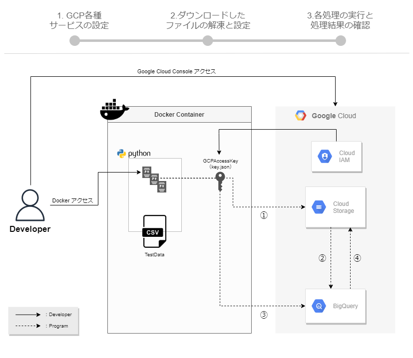

テストデータの登録
GoogleMapのデータをBigQueryで絞り込みを行っていくにあたり、
まずは絞り込むためのテストデータをBigQueryに登録します。
テストデータは、緯度経度が記述されているJSON形式とします。
今回は、GoogleMapで『スター』を付けた住所をExportし、テストデータとして使用したいと思います。

1. テストデータの作成
GoogleMapを開きます。
https://www.google.co.jp/maps
お気に入りの場所を選択し、『スター付き』を選択します。
複数スターを付けていきます。
2. テストデータのエクスポート
Googleデータエクスポートを開きます。
https://takeout.google.com/settings/takeout
「選択をすべて解除」選択し、「マップ（マイプレイス）」のみ選択します。
「次のステップ」 ＞ 「エクスポート作成」をクリックします。
「ダウンロード」をクリックします。
ダウンロードしたZIPファイルを解凍し、JSON形式でスターを付けた情報が存在することを確認します。
3. テストデータのBigQueryへ登録する
BigQueryを開きます。
https://console.cloud.google.com/bigquery
Cloud Shellを開きます。
テストデータの形式に合うテーブル定義を作成します。
echo '[{"name": "type","type": "STRING","mode": "NULLABLE"},{"name": "features","type": "RECORD","mode": "REPEATED","fields": [{"name": "geometry","type": "RECORD","mode": "REPEATED","fields": [{"name": "coordinates","type": "NUMERIC","mode": "REPEATED","fields": []},{"name": "type","type": "STRING","mode": "NULLABLE"}]},{"name": "properties","type": "RECORD","mode": "REPEATED","fields": [{"name": "GoogleMapsURL","type": "STRING","mode": "NULLABLE"},{"name": "Location","type": "RECORD","mode": "REPEATED","fields": [{"name": "Address","type": "STRING","mode": "NULLABLE"},{"name": "BusinessName","type": "STRING","mode": "NULLABLE"},{"name": "GeoCoordinates","type": "RECORD","mode": "REPEATED","fields": [{"name": "Latitude","type": "STRING","mode": "NULLABLE"},{"name": "Longitude","type": "STRING","mode": "NULLABLE"}]}]},{"name": "Published","type": "STRING","mode": "NULLABLE"},{"name": "Title","type": "STRING","mode": "NULLABLE"},{"name": "Updated","type": "STRING","mode": "NULLABLE"}]},{"name": "type","type": "STRING","mode": "NULLABLE"}]}]' > ddl.json
データセットを作成します。
bq mk --dataset --location=asia-northeast1 TEST2
bq mk --table TEST2.TEST2 ddl.json
テストデータをアップロードします。
BigQueryにJSON形式を取り込み場合、JSON内の改行は除外する必要があるため、以下コマンドで置換します。
sed -z 's/\n//g' 保存した場所.json | sed -z 's/Google Maps URL/GoogleMapsURL/g' | sed -z 's/Business Name/BusinessName/g' | sed -z 's/Geo Coordinates/GeoCoordinates/g' > test_data.json
テストデータを登録します。
bq load --source_format=NEWLINE_DELIMITED_JSON TEST2.TEST4 test_data.json
SQLエディターから、テストデータが登録されているかを確認します。
SELECT * FROM TEST2.TEST2